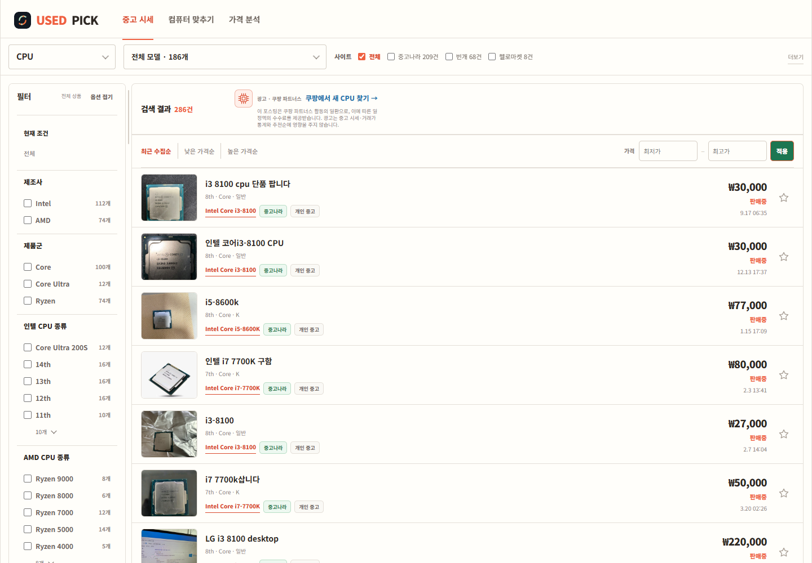
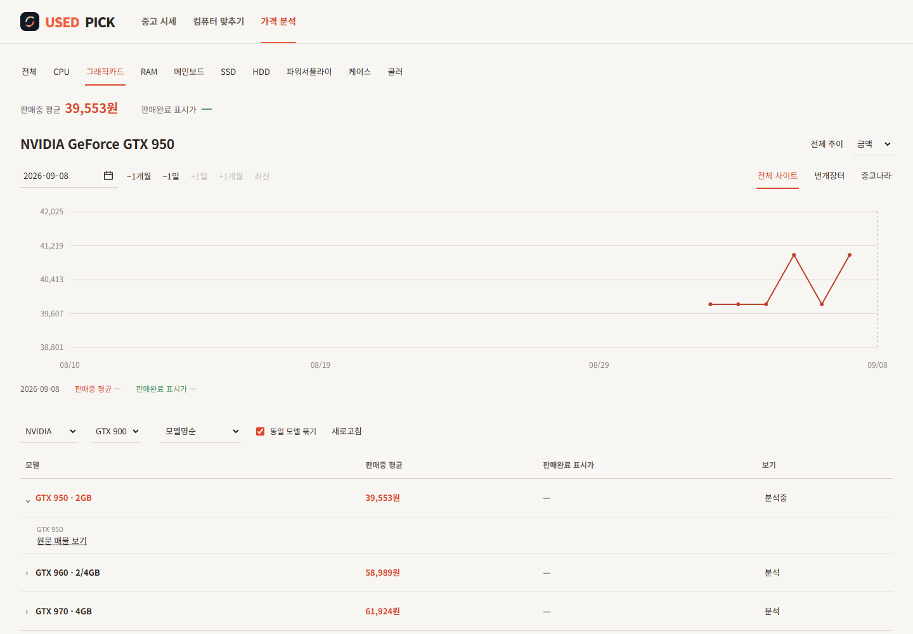
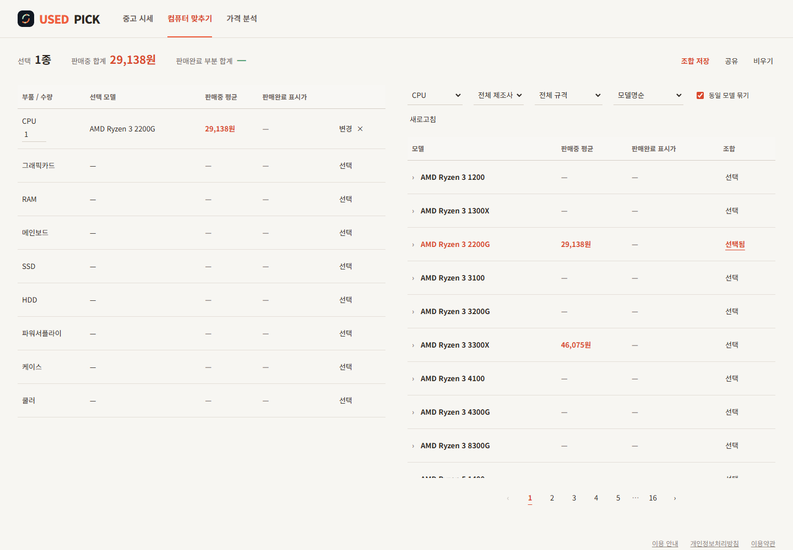

중고 PC 부품을 모델과 규격으로 찾고, 플랫폼별 매물과 가격 추이를 비교하는 서비스입니다. CPU·그래픽카드 등 부품을 조합해 판매중 평균가 기준의 합계도 확인할 수 있습니다.
USED PICK
개요
해결할 문제
플랫폼마다 상품명과 부품 표기가 달라 같은 모델의 시세를 비교하기 어렵습니다. 부품 분류와 모델 기준을 맞추고, 매물 탐색에서 가격 분석과 조합까지 이어지게 했습니다.
구현 과정
부품·모델 기준의 통합 검색에 가격 분석과 컴퓨터 조합 화면을 연결했습니다.
- 부품 종류·제조사·세대·규격으로 모델 범위 선택
- 플랫폼·가격·정렬 조건으로 매물을 비교하고 원문 연결
- 모델별 일별 평균 가격과 플랫폼별 추이 확인
- 부품 모델·수량을 선택해 조합 비용 합산
화면·동작


